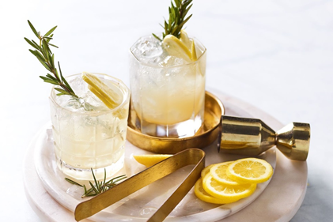
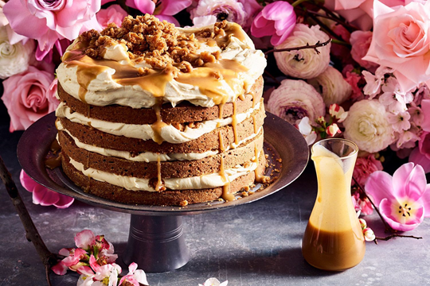

What Dad really wants this Father’s Day, according to Matt Preston

Matt Preston saves Dad’s day – and your bacon, though not literally – with his insider tips for a home-cooked meal (and maybe even a homemade card).
So you’ve forgotten today is Father’s Day. Firstly, don’t feel guilty. Quite frankly, it’s understandable that it crept up on you. Father’s Day here is months later than most of the world, with many countries marking it in June, and others in March, May, August and November. No wonder we’re confused.
And to my mind it’s also one of the lesser days of celebration here in Australia, rivalling Tartan Day and World Chocolate Day, so you can be forgiven. It’s not like forgetting Mother’s Day. Or failing to acknowledge that both these days can be very painful for those who haven’t been able to have the kids they wanted, have lost a child, or who just miss their dads.
It may not be a bad thing that you’ve forgotten. Let’s face it, even with planning, gifts like socks, DVDs on sharks or World War II, or comedy golf balls decorated with the smiling poo emoji aren’t the sort of Father’s Day gifts that most dads remember all that fondly. Or at all. Please don’t tell my kids.
Furthermore, the old stand-by of the kids making something in craft to give as a gift has waned dramatically since the creating and giving of ashtrays by children became frowned upon. The trouble was, whatever the kids tried to make in clay – a cup, jug, vase, coffee pot, whatever – it always ended up looking like a gaudy ashtray anyway. This is a pity, if only because it used to remind us that in France, Father’s Day was introduced in 1949 just as a way for a lighter company to sell more cigarette lighters! Maybe we could repurpose the traditional clay object as a saucer for olive pits?
Whatever you do for any father figure in your life at such short notice is probably better than anything planned anyway. This can stretch beyond the beautiful, heartfelt message in a homemade card (the only Father’s Day gifts I’ve kept; they still bring a lump to my throat) to recreating those cheesy but emotional kindergarten paint handprints – which at least made a change from the kids’ sticky fingerprints on doors, all over the stainless-steel fridge, your car duco, in the cake icing… (I say this a little grumpily for fear you spot a sentimental tear welling at the memory of rediscovering these handprints in a drawer or file.)
For me, sharing a meal with the family is one of the best gifts that I can be given. This has been intensified by the isolation that so many of us have been feeling over the past few years of separations and lockdowns. Rather than breakfast – it’s a little late to plan that now – make it lunch or dinner. Put on the cherished Grand Final DVD or a documentary that includes lots of numbers to distract him while you prep or nip out to the shops.
For lunch, corn fritters with avocado are the perfect option, if a classic roast is out of reach. The fritters are quick to cook and super tasty. While the avocado, lime juice, and perhaps a chilli-caramel drizzle are enough, if your dad is a pork-loving carnivore, he’ll love adding some bacon jam and will probably pop it on everything. (For the vegetarian or non-pork-eating dad, you can make a chilli jam; you’ll find my red onion and chilli jam recipe here.)
Bacon jam takes about an hour to cook and is as easy as frying 500g of rindless, smoked streaky bacon until just crispy, then frying four diced garlic cloves, a diced onion and some thyme in the rendered fat until soft and a little caramelised. Now add back the bacon, ½ cup of maple syrup, ¼ cup of brown sugar, 1/3 cup of cider vinegar, a cup of strong coffee and a chopped chipotle chilli (or some smoked paprika and a diced red chilli) and cook everything down for about an hour, until thick. Add water if it thickens too quickly and starts to catch. Finally, blitz and bottle in a sterilised jar. You’ll find my corn fritter recipe here, plus loads of other suitable Father’s Day recipes.
If that’s too much effort, ordering his favourite takeaway tonight and watching his favourite movie – even if it is About Time, The Notebook or The Pursuit Of Happyness – will more than suffice.

Small acts of kindness also resonate big. Take the time to make him, unprompted, a drink he loves such as a proper coffee, a pot of tea or a cocktail. I’d suggest a whisky mac: equal parts whisky and ginger wine poured over crushed ice with a slice of lemon or orange. As I write this, my daughter just snuck up behind me and gave me a huge surprise hug – a small act of kindness that was better than any material present.
You’ve also still got time to bake him a cake for this afternoon. With this in mind, we’ve compiled a collection of 100 perfect recipes you can bake this Sunday that range from our easy multi-layer carrot cake with a brown butter and whisky sauce to a choc banana bundt cake with a hot-chocolate butterscotch.

You can even take inspiration from the past. While Father’s Day officially dates back to 1508 and is based on the celebrations of the feast of Saint Joseph that started from the 14th century, the country that took it most seriously was Germany. Their Father’s Day was marked by all the blokes in the village filling a cart, the bollerwagen, up with beer, ham and sausages, and dragging it out by hand to the country for a picnic. So why not send him off to the golf course or the surf break with a ham sandwich and a couple of beers in his golf bag or three-board quiver. Just tell him it is tradition.
And while he’s gone, the kids can make him that schmaltzy card that’ll have him getting all misty-eyed, too.

Christmas countdown calendar: what to do at 4 weeks
There are 26 days until Christmas. If you just used an expletive out loud, it’s time to read our Christmas planner and save yourself those...

Science says consuming wine and cheese daily is good for your brain
It’s gouda news for cheese fiends and vino aficionados: a new study shows that consuming more wine...

34 recipes from Nanna we're making in times like these
Make like Nanna and recreate these simple classic recipes we had when we were growing up. Golden syrup cakes, cottage pies, classic lasagnes...

WHAT IS FETA / SIRENE (Bulgarian Cheese)?
Most listeners will have tried feta already. its a brined curd white cheese made from sheep’s milk or from a mixture of sheep and goat’s milk. It is a crumbly aged cheese, normally at least 3 months aged, commonly...
Mailing
Sign up for out mailing list to get latest update and offers
We respect your privacy
© Copyright: Group 5 - FPT Aptech